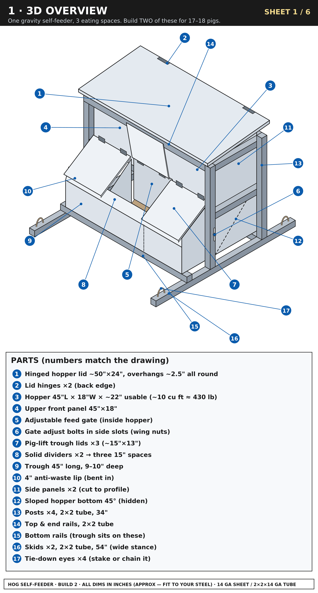
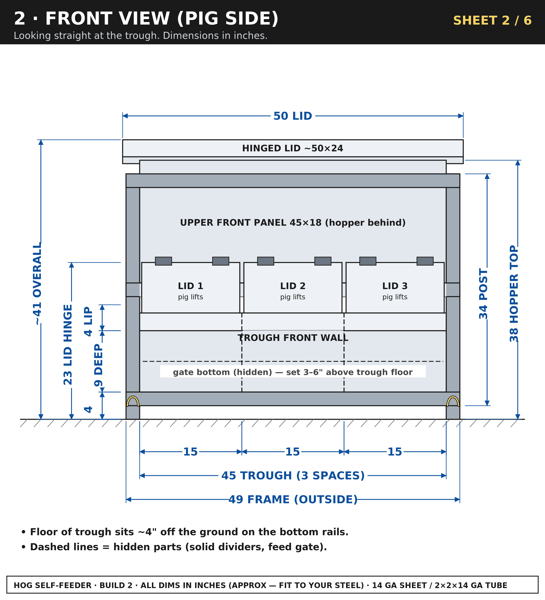
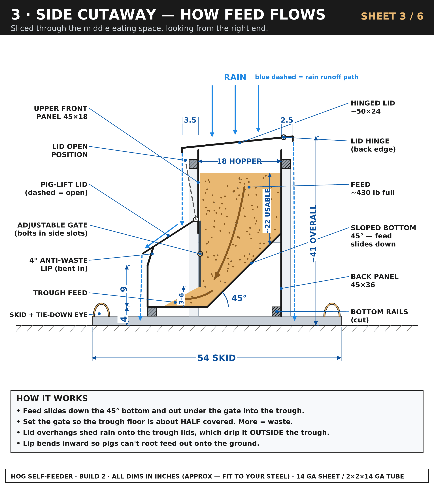
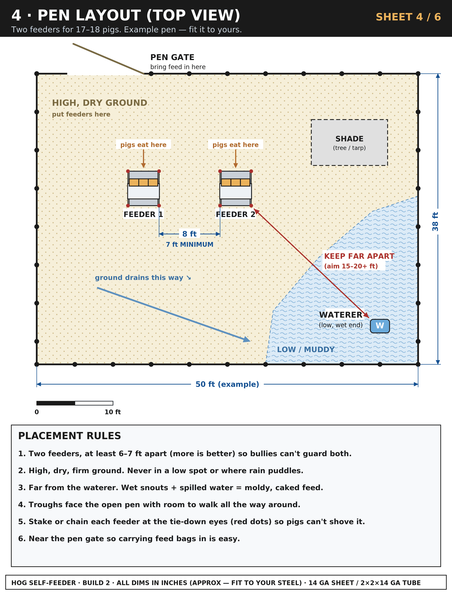
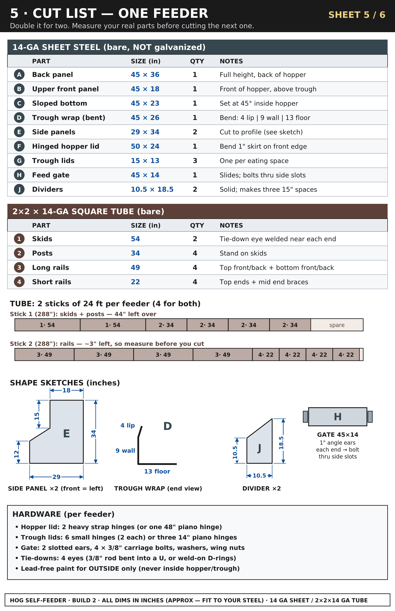
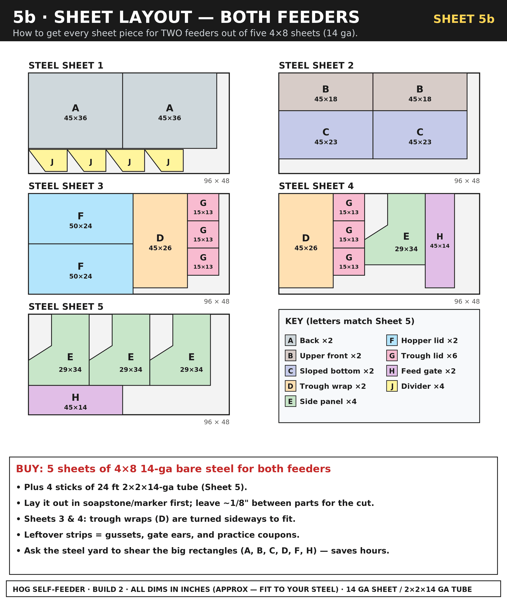
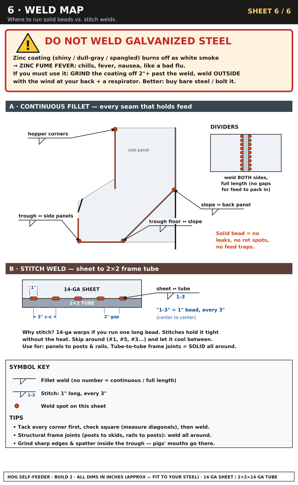

Hog Feeder Build
Two gravity self-feeders for a group of 17–18 growing pigs. All dimensions in inches; fit them to your real steel.
Key specs
- Two feeders, 3 eating spaces each (six 15" spaces) for 18 pigs. Two feeders cut down on bullying.
- Hopper ~430 lb each (45" × 18" × ~22" usable, about 10 cu ft).
- Trough 45" long, 9–10" deep, 4" anti-waste lip. About 41" tall overall, on 54" skids with tie-down eyes.
- Hinged hopper lid with overhang, plus a flip-up lid over each eating space.
- Steel order (both feeders): five 4×8 sheets of 14-ga bare steel, and four 24-ft sticks of bare 2×2×14-ga square tube.
⚠ Don't weld galvanized steel
Zinc coating (shiny, dull gray, or spangled) burns off as white smoke and causes zinc fume fever: chills, fever, nausea, like a bad flu. Buy bare steel. If you must use galvanized, grind the coating off 2"+ past every weld, weld outside with the wind at your back and a respirator, or bolt those parts instead. Use lead-free paint on the outside only, never inside the hopper or trough.






